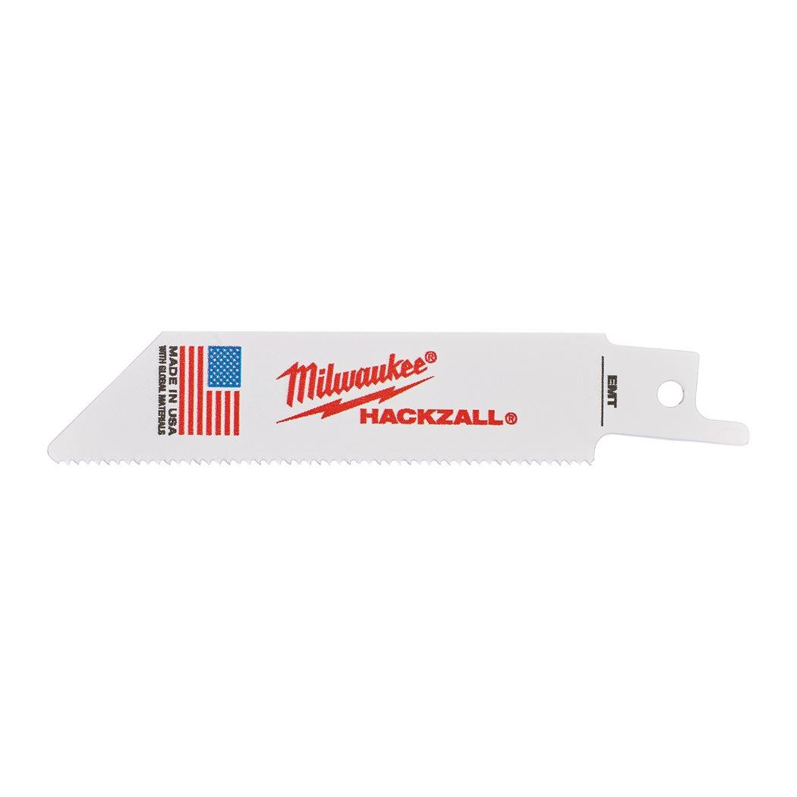

| Blade length (mm) | 100 |
| Material type | Bi-Met,Co |
| Max. cutting capacity aluminium (mm) | - |
| Max. cutting capacity metal pipe ⌀ (mm) | ⌀ 10 - 32 |
| Max. cutting capacity non-ferrous metals (mm) | 1.5 - 4 |
| Max. cutting capacity plastic pipes (mm) | - |
| Max. cutting capacity PVC (mm) | - |
| Max. cutting capacity steel (mm) | 1.5 - 4 |
| Max. cutting capacity wood (mm) | - |
| Pack quantity | 5 |
| Article Number | 49005418 |
| EAN | 045242160341 |